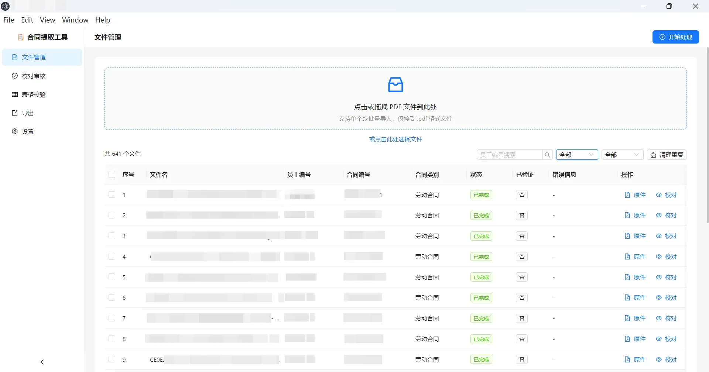
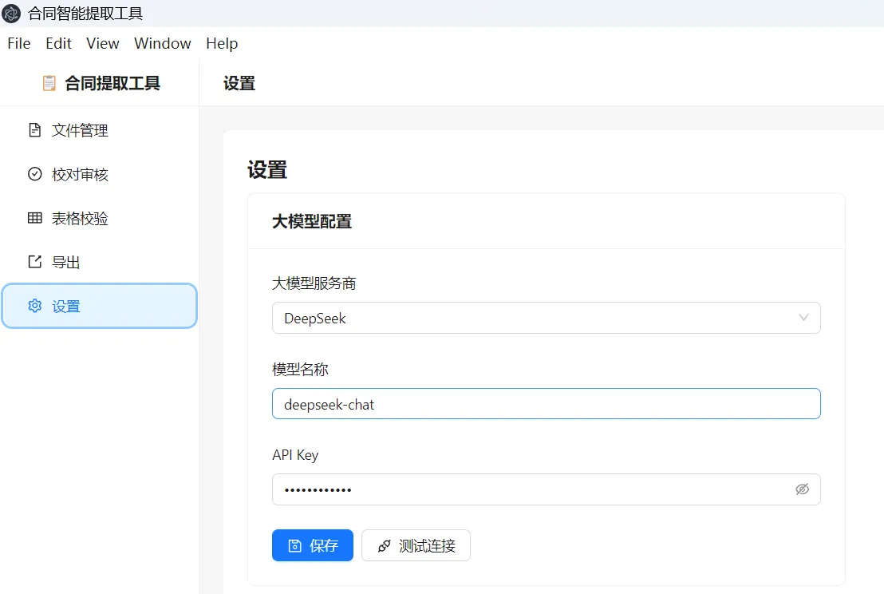
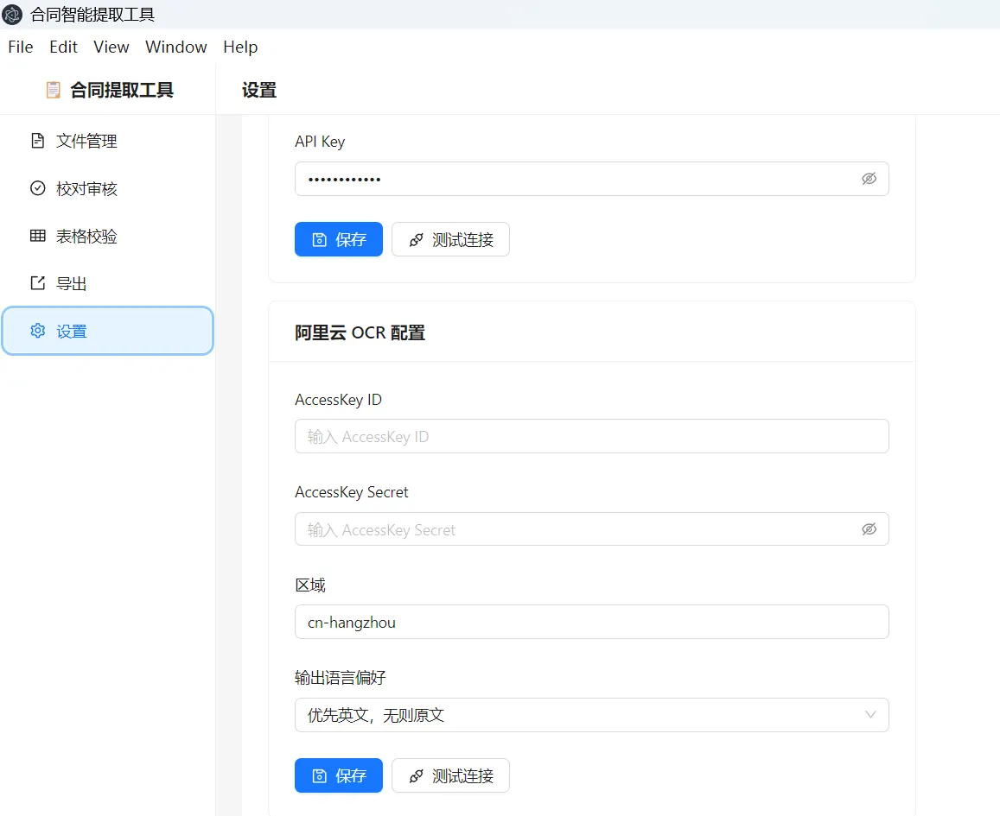
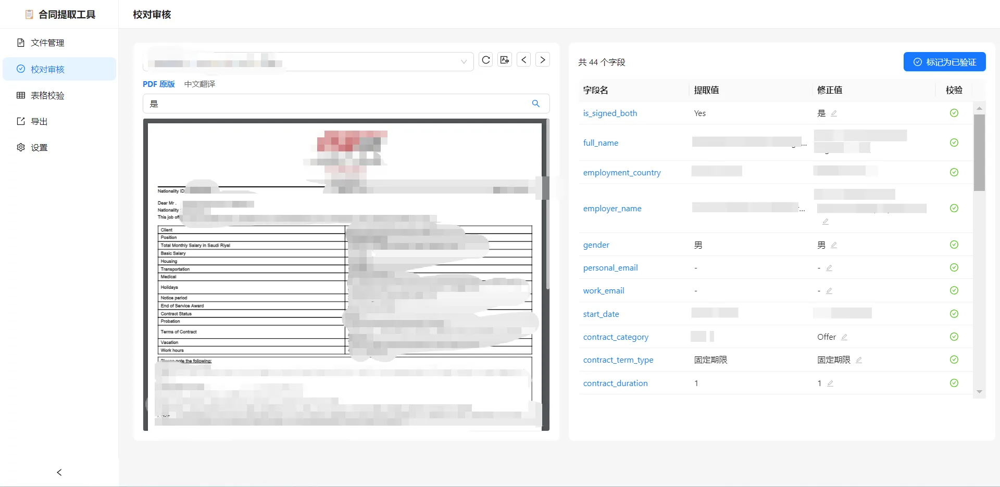
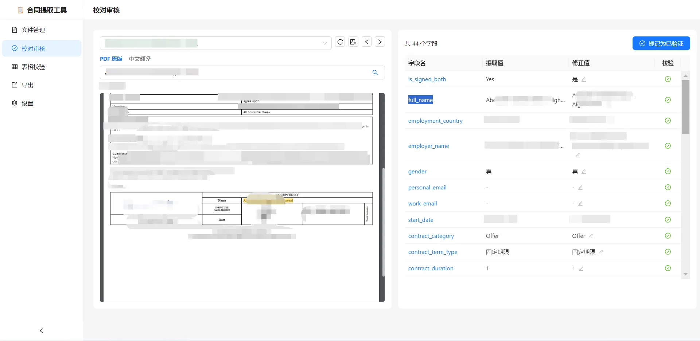
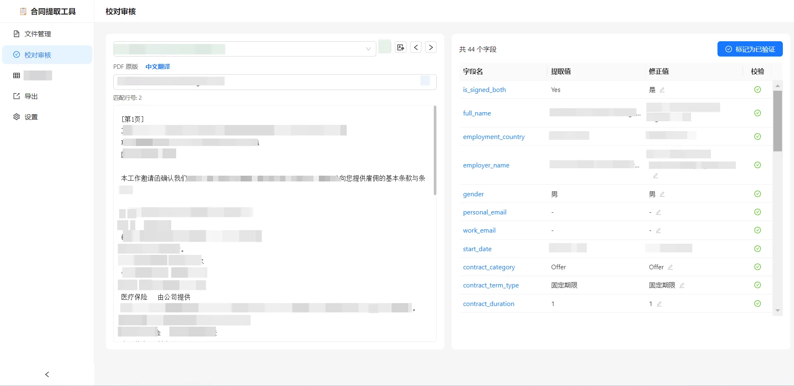
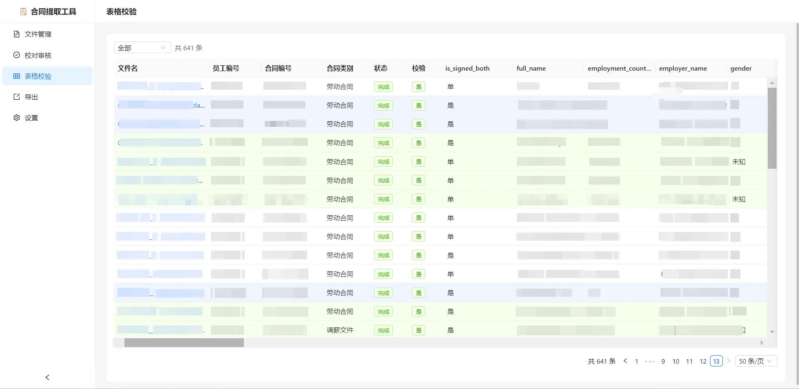
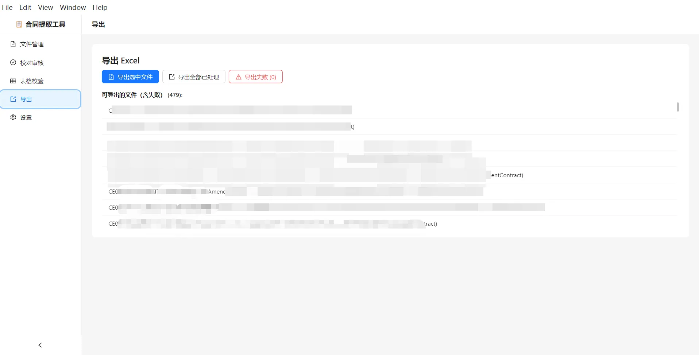

← 返回作品集列表
📄
合同智能提取工具
2026.06·
AI与数据应用
Electron · React · TypeScript · DeepSeek · OCR
项目背景
企业 HR / 法务部门需要从大量 PDF 劳动合同和调薪文件中手工提取员工信息，效率低、易出错。本工具利用 LLM + OCR 实现批量自动提取 44 个关键字段，并提供人工校对与导出功能。
核心功能
- 文件管理 — 拖拽/批量导入 PDF，MD5 自动去重，文件名解析员工编号。支持按状态筛选、全选、删除、清理重复。
- 智能提取 — pdfjs 文字提取 + 阿里云 OCR 扫描件识别（可选），DeepSeek / 智谱 AI 提取 44 字段，自动格式校验。
- 校对审核 — 左侧 PDF 原版渲染（Canvas），右侧字段表格。点击字段名高亮定位 PDF 对应文字，支持手动修正。
- 翻译辅助 — LLM 译为中文，日期/金额/人名保留原文，翻译结果缓存不重复调用。
- 表格校验 — Excel 式全文件表格视图，同一员工行背景同色，双击跳转校对页。
- Excel 导出 — 49 列完整导出，校验异常黄色标注，失败文件自动填入员工编号。
技术架构
| 框架 | Electron 31 + React 18 + TypeScript |
| UI | Ant Design 5 + Zustand 状态管理 |
| LLM | DeepSeek / 智谱 AI · 44 字段结构化提取 |
| PDF 引擎 | pdfjs-dist 文字提取 + @napi-rs/canvas 渲染 |
| OCR | 阿里云 OCR（扫描件识别，可选） |
| 数据库 | sql.js（SQLite 本地） |
| 导出 | exceljs · 49 列 · 校验高亮 |
界面截图

文件管理 — 拖拽导入，状态筛选，批量操作

设置 — DeepSeek / 智谱 AI 配置

设置 — 阿里云 OCR 配置（可选）

校对审核 — 左 PDF 原版 / 右字段表格

校对 — 点击字段名，PDF 黄色高亮定位

校对 — LLM 翻译辅助

表格校验 — Excel 式全文件视图

导出 — 49 列 Excel，校验异常黄色标注
量化成果
- ✅ 支持 47 个字段（44 AI 提取 + 3 系统字段）的自动化处理流水线
- ✅ 结合 LLM + OCR，覆盖文字型/扫描件两种 PDF 格式
- ✅ 校对页面支持 PDF 原文点击高亮定位，翻译缓存机制减少重复 API 调用
- ✅ 5 个一组生产建议，适配批量处理场景